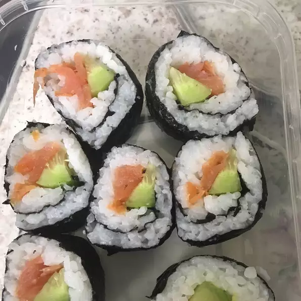

Sushi

Basic Sushi Roll
Sushi can be filled with any ingredients you choose. Try smoked salmon instead of imitation crabmeat. Serve with teriyaki sauce and wasabi.
Ingredients
- ⅔ cup uncooked short-grain white rice
- 3 tablespoons rice vinegar
- 3 tablespoons white sugar
- 1 ½ teaspoons salt
- 4 sheets nori seaweed sheets
- ½ cucumber, peeled, cut into small strips
- 2 tablespoons pickled ginger
- 1 avocado
- ½ pound imitation crabmeat, flaked